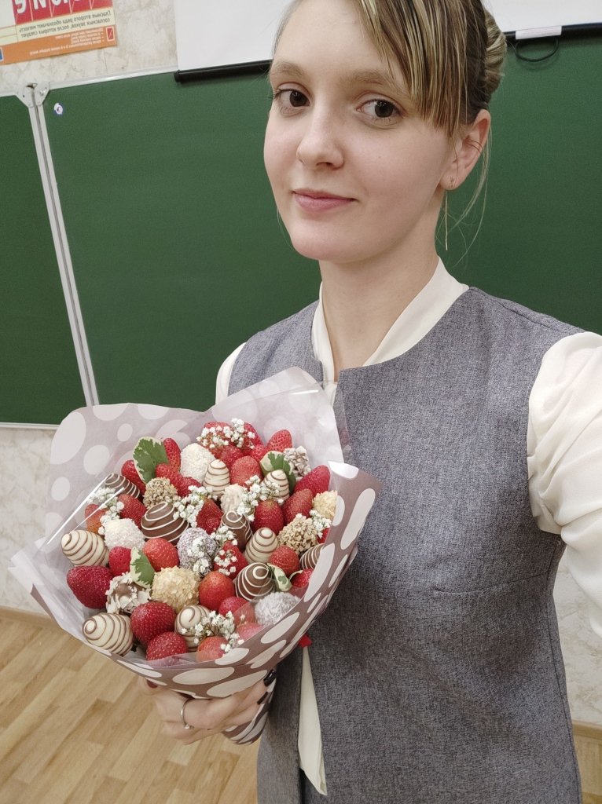

Персональный cайт учителя начальных классов Рубан Татьяны Сергеевны
Вы находитесь на странице " Об учителе"
НВ этом разделе вы найдете основную информацию об учителе начальных классов
Рубан Татьяна Сергеевна

Образование
Важные достижения
- 2017 год- победитель регионального чемпионата молодых профессионалов "WorldSkillsRussia"
- 2021 год- Победитель второго тура открытого городского конкурса "Краса образования"
- 2023-2024 года- Участник муниципального этапа всероссийского конкурса "Учитель года России-2024"